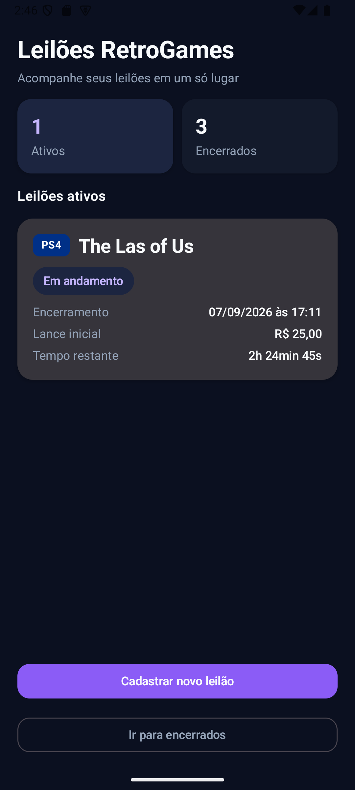
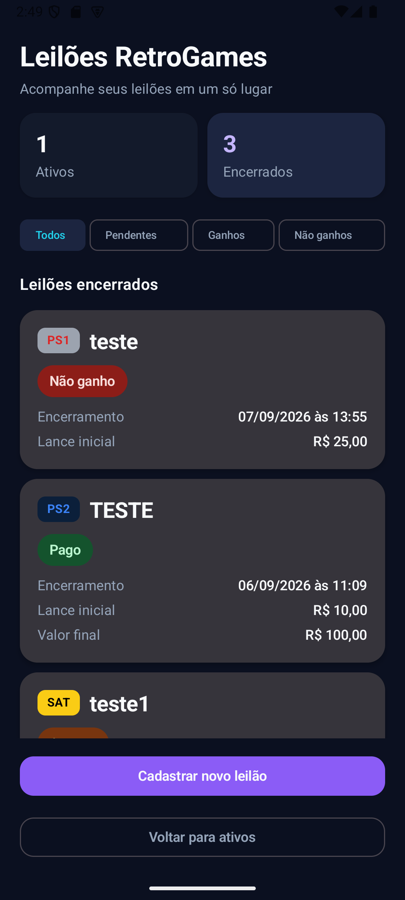
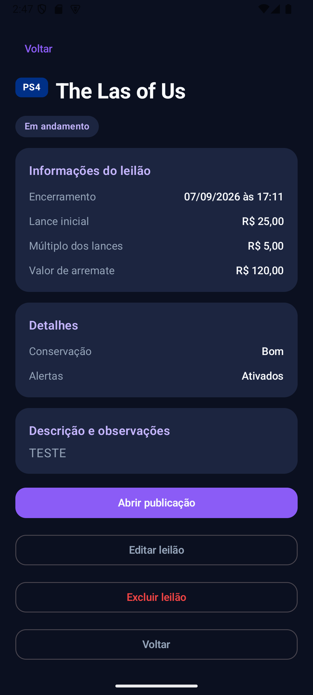
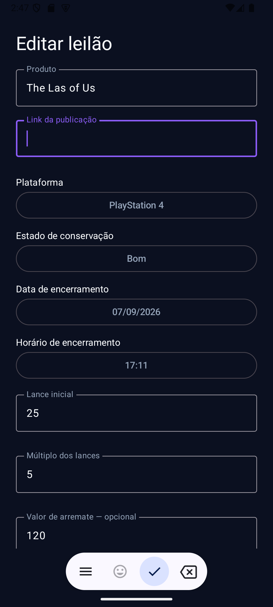

Leilões ativos
Centralização dos itens acompanhados com data, horário e contagem regressiva em tempo real.
Organize, acompanhe e gerencie seus leilões de jogos, consoles e itens retrô em um só lugar.
O Leilões RetroGames nasceu para facilitar o acompanhamento de leilões publicados em grupos e comunidades online.
Centralização dos itens acompanhados com data, horário e contagem regressiva em tempo real.
Notificações locais antes do encerramento para reduzir o risco de perder um leilão.
Organização entre pendentes, ganhos, não ganhos, pagamentos pendentes e pagos.
Os dados ficam armazenados no dispositivo utilizando Room, sem necessidade de servidor.
Interface desenvolvida com Jetpack Compose e identidade visual inspirada no universo gamer.

Contagem regressiva, plataforma, encerramento e valores principais.

Filtros para resultados pendentes, ganhos e não ganhos.

Informações, resultado, pagamento, alertas e acesso à publicação original.

Plataforma, conservação, valores, encerramento, observações e alertas.
Registre o leilão e seu encerramento.
Veja o tempo restante e receba alertas.
Informe se o leilão foi ganho ou não.
Acompanhe valor final e pagamento.
Código-fonte, arquitetura, documentação técnica e histórico de desenvolvimento estão disponíveis no GitHub.
Abrir repositório